8. Viaje al Sur de España
8. Viaje al Sur de España
25 de febrero al 7 de marzo 2022
Día 4, atravesando la provincia de Sevilla para llegar a Ronda
28 de febrero de 2022
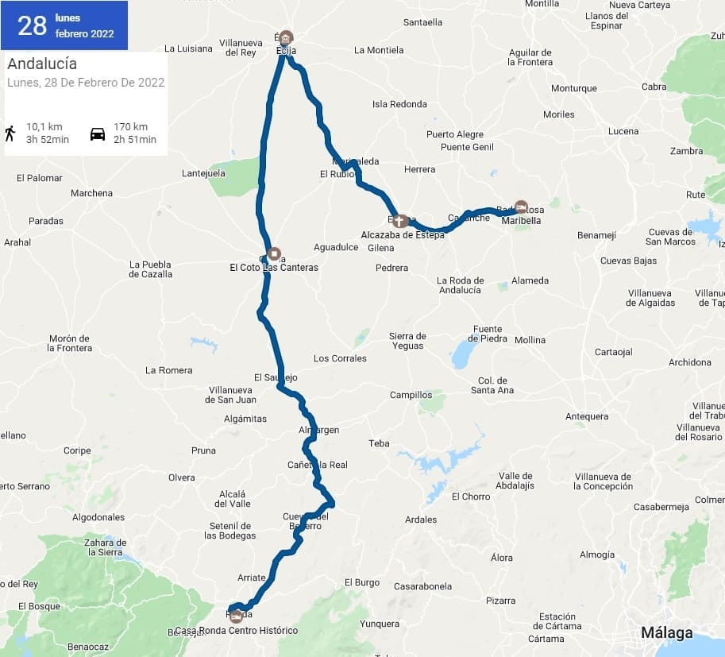


132. Estepa
132. Estepa
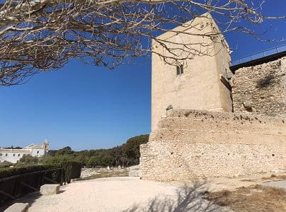
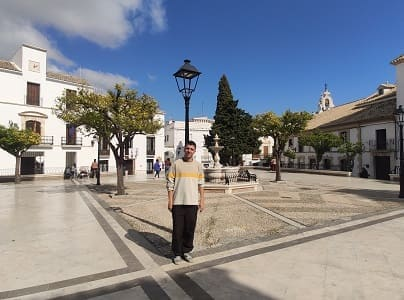
Después de ver gran parte de la provincia de Córdoba (quedando el norte de la provincia) mi intención era ir a conocer los pueblos de Málaga y sobre todo Ronda. Para ello atravesaría el este de la provincia de Sevilla y visitaría varios de sus pueblos donde nunca había estado.
El primero de estos pueblos es Estepa. Este pueblo es conocido por sus polvorones, ya que es la marca reina de España y todos los españoles los hemos comido alguna vez. Subí hasta lo más alto del pueblo para ver su castillo o lo que quedaba de él. Muy cerca esta el convento de San Francisco que estaba cerrado y la iglesia de Santa Clara. Esta iglesia es muy antigua, posiblemente existía alguna construcción previa a la fundación del convento en el siglo XVI.
Lo que realmente me sorprendió de este pueblo es la calidad de sus iglesias. Destacan la iglesia de Nuestra Señora de la Asunción y la iglesia del Carmen.
De la iglesia de la Asunción, destaca la profusa decoración pictórica dieciochesca de su interior, cuyo esquema compositivo gira en torno a la vida de la virgen. con una singular estructura barroca conocida como torre-camarín, levantada hacia el año 1716. Preside el espacio la imagen de Nuestra Señora de la Asunción, patrona de la localidad, una obra fechable en el curso del siglo XVII.
El retablo mayor es del año 1749, y está relacionado con el taller de González Cañero, de la escuela ecijana. Diego Márquez diseñó el retablo de la capilla de San Pedro, donde destaca la imagen del Santísimo Cristo de las Penas, una obra del siglo XVI, la Virgen de los Servitas, del siglo XVII y una imagen de San Pedro apóstol. Lo más bonito es la boveda con sus diferentes frescos atribuibles a talleres de Madrid, y los de la nave a la escuela Sevillana. Por lo cual se puede decir que la variedad de artistas y escuelas hacen de ella una obra singular de la arquitectura religiosa andaluza.
La Iglesia del Carmen fue fundada sobre la antigua ermita del Cristo de la Sangre, que databa en el siglo XVI. Auún hoy es posible ver algunos detalles gótico-mudéjares pertenecientes a la anterior edificación. Su construcción, a excepción de los contrafuertes anteriores, data del siglo XVII; si bien su interesante y elaborada decoración barroca corresponde al siglo XVIII. Los marqueses de Estepa utilizaron durante varios siglos la cripta de este templo como panteón nobiliario.
Otras iglesias más corrientes la de san Sebastian. Por encima de todas las torres de las iglesias se eleva la torre de la Victoria. Esta torre formaba parte de un antiguo convento que sufrió los efectos de la invasión francesa y de la desamortización. Debido al estado que presentaba finalmente sería destruido pero la torre no se toco y es la que se conserva en nuestros días.
Seguidamente me desplace para ver Écija al nororeste.


133. Écija
133. Écija
Ecija es de los pueblos más importantes de Sevilla, tanto por su población como por su historia. Écija fue uno de los pueblos más importantes de la época romana y en el hay numerosas ruinas y vestigios que hablan por sí solos.
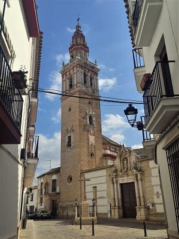
El palacio de Benameji reúne un museo con objetos de todos los pueblos de alrededor. Es muy bonito su patio y sus escaleras, y guarda suelos de mosaico muy grandes que bien podían competir con los del museo de Mérida. De la misma época es un estanque romano encontrado en la plaza del ayuntamiento. En la plaza destaca el mirador de Benameji y la casa mirador del Gremio de la Seda que eran utilizados para observar los festejos por el marques de Benameji. La plaza es muy amplia y se pueden ver algunos edificios religiosos a parte del ayuntamiento que cuando estuve, lo tenían en restauración.
Esos edificios son
la iglesia de Santa María, la de san Juan y la de santa Ana y el convento del Sagrado Corazón de Jesús. Muy cerca de esta plaza encontramos
la iglesia de san Gil de grandes proporciones.
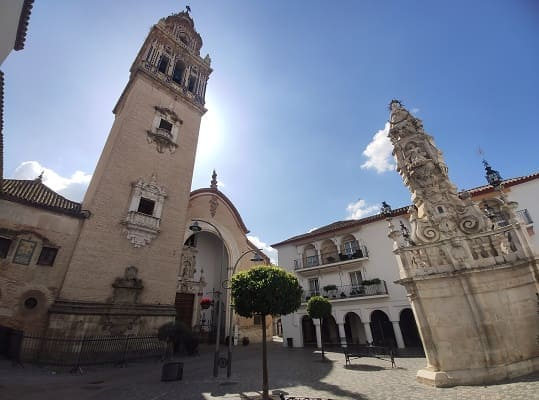
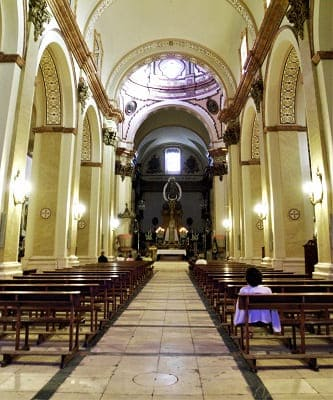
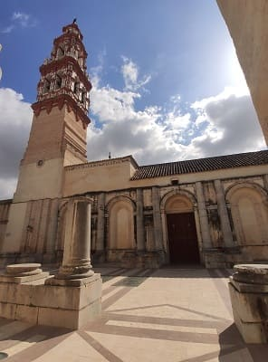
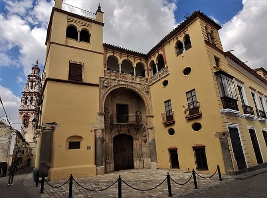
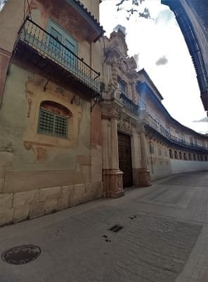
Écija cuenta con palacios muy bonitos como
el palacio de Peñaflor con un gran patio y
el palacio de Valdehermoso, que tiene una portada renacentista y unos balcones preciosos. El palacio de Valdehermoso
El palacio de Peñaflor fue construido a partir de una serie de viviendas de principios del siglo XVI. Estas serían ampliadas y sufrirían diferentes cambios. Juntas formarían este palacio. La mayor de la parte visitable es posterior, del siglo XVIII. En el trabarian diferentes arquitectos sevillanos de renombre. Fue residencia de la familia Peñaflor hasta que murira la marquesa en 1958. En el testamento expresaría el deseo de que fuera convertido en una escuela profesional y religiosa. Actualmente se encuentra como sede de la fundación y biblioteca municipal.
Detrás se ve
la torre de la iglesia de san Juan, de estilo mudéjar, con un aire a varias de Estepa o a alguna de Jerez de los Caballeros en Badajoz.
Por último iría camino hacia el río para llegar al parque más grande de Ecija,
el parque de San Pablo que se puede ver en la imagen.
Cerca están otros palacios como
el palacio de Bobadilla o palacio de Lasso Vega.
Ya siendo medio día buscaría un restaurante y comería en la hermandad sevillista junto a la iglesia de Santa Cruz. Una plaza grande con una iglesia también muy grande. Cerca se encuentra
la iglesia de San Pablo y Santo Domingo, una de las iglesias barrocas de más valor de la ciudad y de la zona. Otra iglesia a visitar es la del
convento de la purísima Concepción y la del convento de la santísima Trinidad.
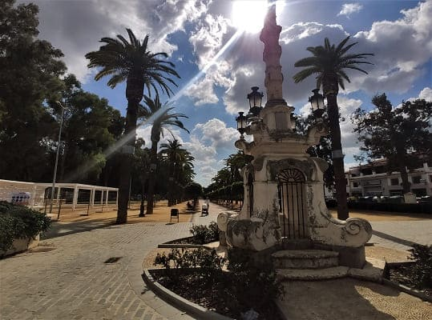
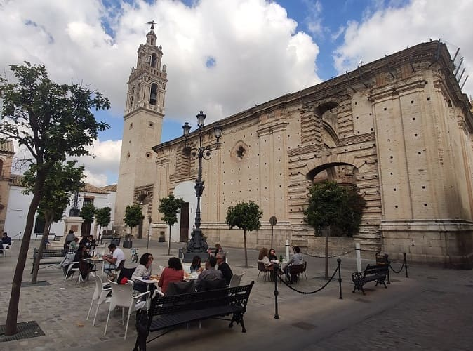
Otros palacios son el de Cárdenas y Prados Castellano, el palacio de Santaella, el de Justica también llamado casa de las Tomasas, el palacio de Garcilaso y el de los Águilas.
Con todo esto el patrimonio de Écija es enorme, y si bien dicen que Carmona o Osuna son las ciudades más patrimoniales después de Sevilla, en mi opinión Écija es la segunda ciudad con más patrimonio después de Sevilla.
Habiendo visitado Écija en un tiempo récord de 5 o 6 horas bajé para ver
Osuna.


134. Osuna
134. Osuna
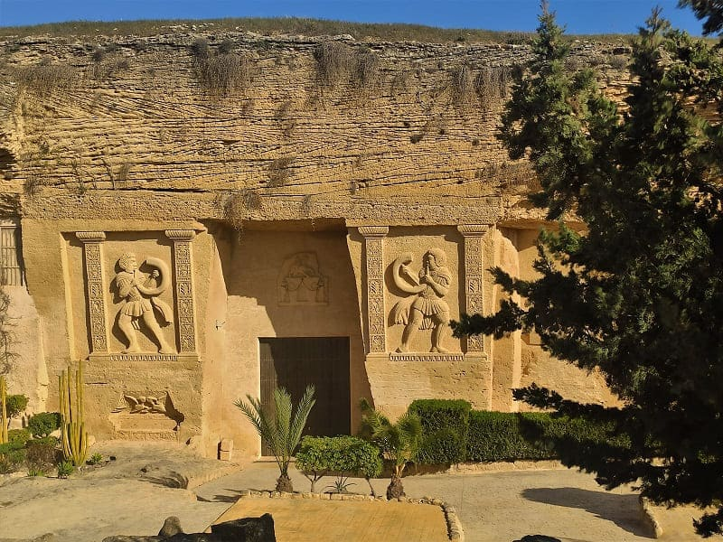
Llegue sobre las 17 horas y lo primero que vi fue el
Coto de las Canteras. Es un área extensa donde se obtuvo la roca para realizar la mayoría de edificios de Osuna desde la época romana. Hoy en día han transformado el relieve de los muros haciendo figuras de personas o animales y limpiando el interior para poder realizar eventos. Además han creado un museo y algunos lo comparan con Petra por su color rojizo y las figuras que han creado, eso si todas recientes.

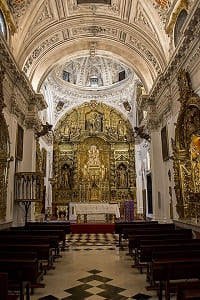
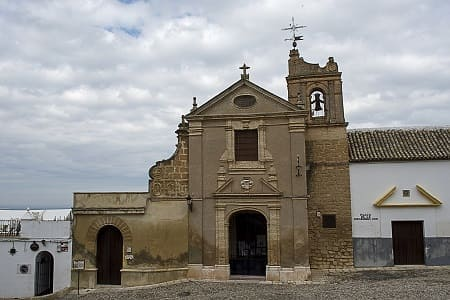
Después iría a intentar entrar a la Colegiata, pasando por la
iglesia de la Merced y su torre, con las características del barroco sevillano de mitad del siglo XVII. Es una de las torres más bonitas de la provincia, junto a otras ya vistas como la de la Victoria de Estepa u varias de las de las iglesias de Ecija.
Antes de llegar a la colegiata nos encontramos en la misma plaza con el monasterio de la Encarnación. El edificio se levantó en 1549 como Hospital de la Encarnación del Hijo de Dios. A principios del siglo XVII, sirvió como colegio de la compañía de Jesús, que luego se trasladó a la iglesia de San Carlos El Real, para transformarse en 1626, en monasterio de monjas mercedarias con el patrocinio de Catalina Enríquez de Ribera, duquesa de Osuna.
La última visita guiada era a las 17:45 con lo que no pude entrar a la colegiata.
La colegiata de Nuestra Señora de la Asunción de Osuna se edificaría a finales del siglo XV. Se haría sobre la antigua fortaleza que dominaba la ciudad en tiempos de la reconquista. Desde ella se divisa toda la ciudad. Esta realizada con sillería de las canteras de alrededores y debido a las propiedades de los materiales ha dado lugar a problemas de humedad a lo largo de los años y ha requerido varias restauraciones. En el exterior destaca la Puerta del Sol, en la que existen varias simbologías católicas e inscripciones. La iglesia es de gran amplitud y en ella han trabajado diferentes artistas como Jose de Ribera, Luis de Morales, etc. En ella se alternan elementos de estilo gótico y renacentista. Existen diferentes capillas como la capilla Mayor, la del Sagrario y la de la INmaculada Concepción, de estilo barroco.
Si hay algo por lo que se diferencia de otras colegiatas es por su patio con diferentes frescos y relieves, de estilo renacentista y por su capilla Ducal, también llamada capilla del Panteón. Es uno de los monumentos más destacados del Renacimiento andaluz. Es muy amplio con tres grandes naves y con diferentes retablos de muy elevada calidad, en el que destaca un relieve en terracota de San Jerónimo Penitente y diferentes pinturas. En el Panteón se encuentra el Santo Sepulcro. Además cuenta con un artesonado decorado con diferentes detalles en pan de oro. Muy cerca esta la sacristía y el museo. Este lugar además ha sido elegido para rodar algunas escenas de la serie conocida de
Juego de Tronos.
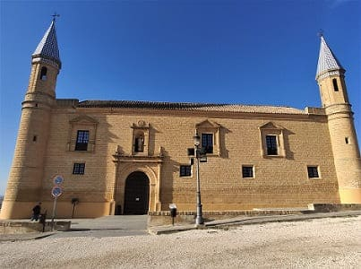
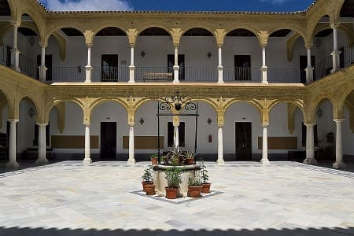
No muy lejos esta
la universidad de Osuna, la que se puede entrar para ver su patio. La universidad es una de las más antiguas de España construida en el siglo XVI. Es un edificio sencillo de planta rectangular con un patio también cuadrado. Destaca la capilla en su interior y la sala de la Girona. Esta sala contiene diferentes pinturas de gran importancia.
Otros edificios de interés en Osuna son
el palacio de Miguel Reina Jurado, el palacio de Cepeda con su bonito escudo de armas o
el palacio del marques de Gomera, con un gran patio hoy convertido en hotel.
Como edificaciones religiosas están
la iglesia de san Agustin, la de santo Domingo que es enorme, la del convento de Nuestra Señora del Carmen o la de San Carlos el Real. Son de estilo barroco, y de ellas destaca la de Santo Domingo por sus dimensiones. Esta era de las más importantes y tenía un gran artesonado mudéjar que desapareció. El convento del Carmen también es bastante grande que posee una iglesia con un bonito retablo barroco.
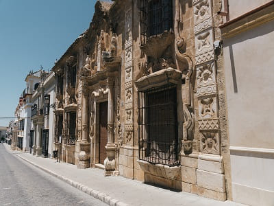
Otras edificaciones importantes son
el pósito municipal o la cilla del cabildo colegial que tiene la fachada barroca más espectacular de la provincia de Sevilla, que se ve en la imagen de la derecha. La portada, descentrada, destaca por su entidad casi escultórica; está enmarcada por columnas corintias que parten de pedestales bulbosos y sostienen una cornisa mixtilínea, muy recortada, disponiéndose alrededor del dintel un baquetón ondulado. Sobre la cornisa se alza la representación escultórica en bulto redondo de la Giralda, Santas Justa y Rufina y las jarras de azucenas, rodeadas de otra moldura mixtilínea y coronando el conjunto por un remate muy recortado a modo de frontón.
Con todo esto podemos decir que Osuna es una de las ciudades más monumentales de Sevilla, solo por detrás de Ecija y Carmona. Su importancia se debe a la llegada de Pedro Téllez de Girón, muy cercanos al monarca Felipe II que le daría el titulo familiar de Duque de Osuna. En ese período se mandarían construir trece iglesias y conventos, un hospital, la Universidad, la Colegiata y el Sepulcro ducal. La familia se convertiría con los siglos en una de las más influyentes de España con diversas propiedades a lo largo de la geografía peninsular.
Con esto ya iría derecho a Ronda donde tenía el hostal.
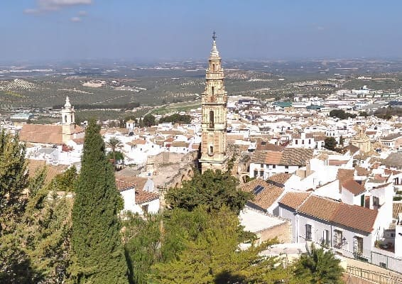
Iglesias de Santa María la Mayor x.XIII, Nuestra señora de la Asunción, del Carmen y de los Remedios, s.XVI.
10
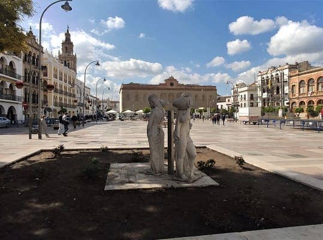
Plaza de España, Iglesia de Santa María, s.XVIII.
11
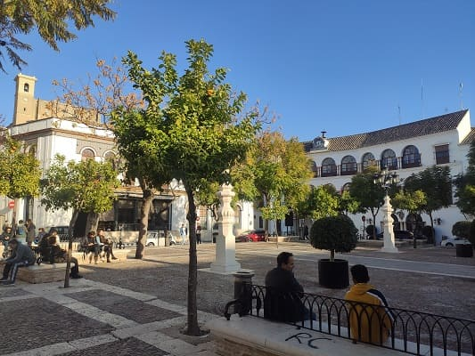
Plaza Mayor, Colegiata s.XVI y Coto de las Canteras.
12
Día 5, visita por la provincia de Málaga (CLICK para continuar)
1 de marzo de 2022
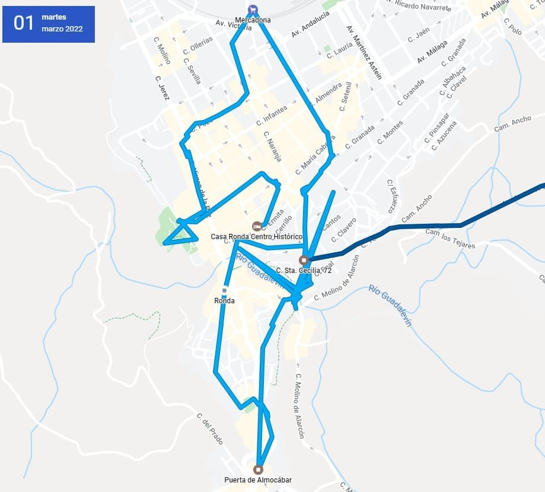
![[Valid RSS]](https://www.onepointsync.com/wp-content/uploads/2016/08/valid-rss-rogers.png "Validate my RSS feed")